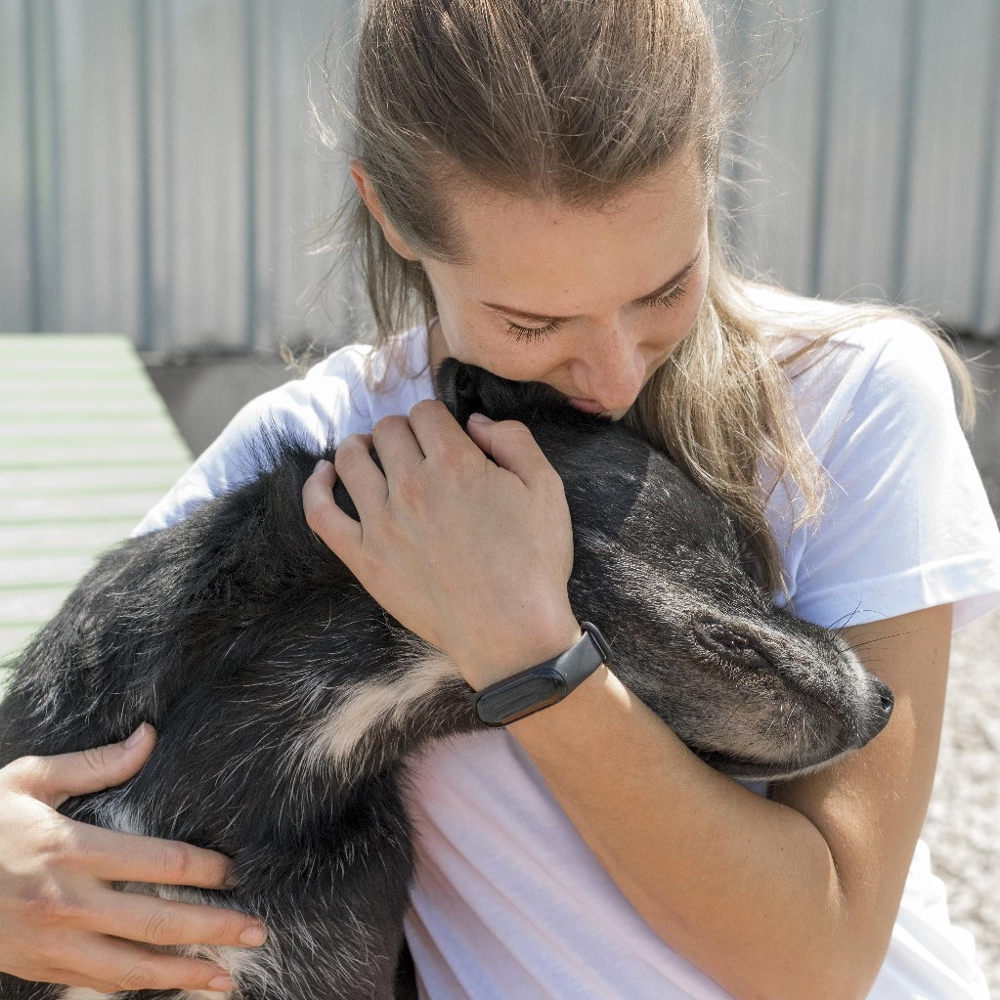
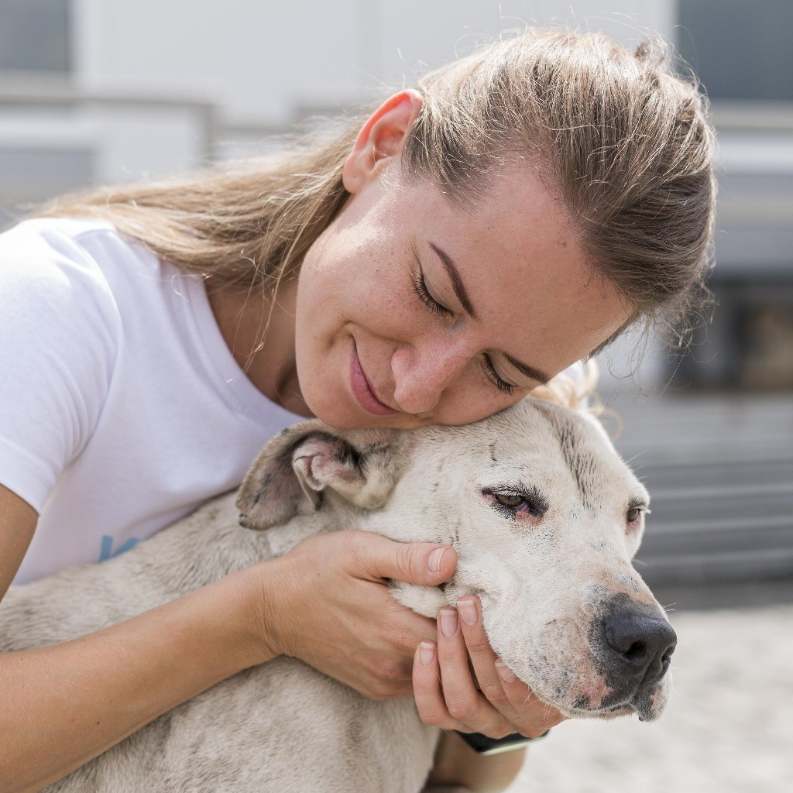
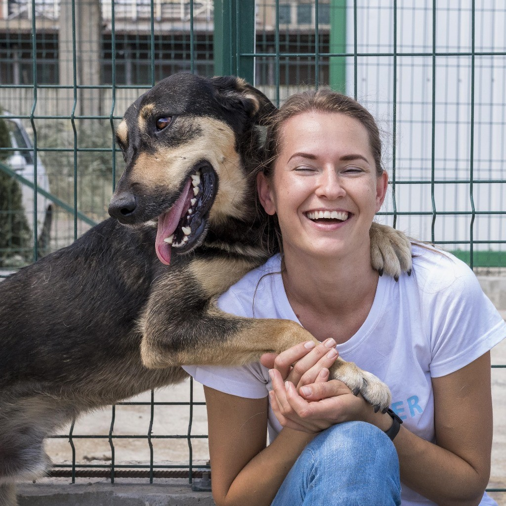

Descubre la conmovedora historia de Ayrton y su mejor amigo Tobby.... Descubre la conmovedora historia de Ayrton, quien se sentía solo y anhelaba la compañía de un compañero peludo para compartir su vida. Decidió tomar acción y contactó con la protectora de animales local en busca de un amigo de cuatro patas.
Descubre la conmovedora historia de Ayrton y su mejor amigo Tobby....
Descubre la conmovedora historia de Ayrton y su mejor amigo Tobby....
